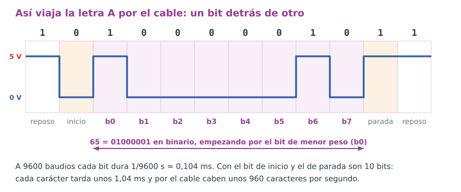
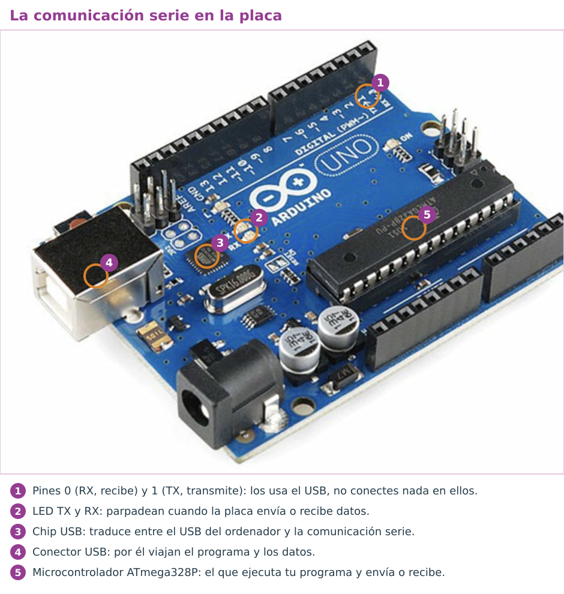
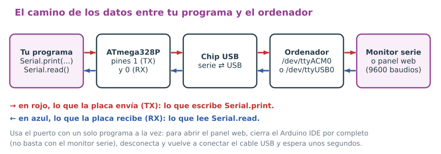
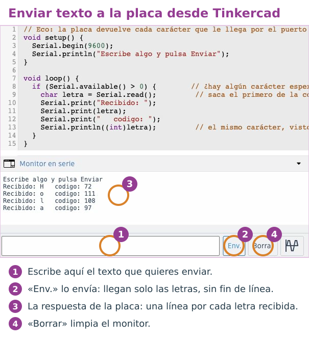
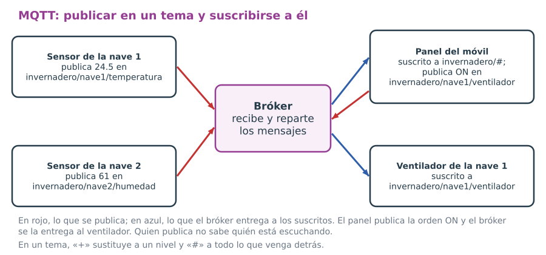

Qué vas a conseguir en esta página
Entender cómo viajan los datos entre la placa y el ordenador, hacer que la placa reciba órdenes por el puerto serie y no solo que escriba, enviar varias medidas en una línea que otro programa pueda leer, y conocer las redes con las que se comunican los dispositivos de verdad: Bluetooth, wifi, LoRa, Zigbee y MQTT.
En la página 6. Entradas analógicas y sensores usaste el monitor serie para ver los números que leía la placa. Aquí vas a ver qué pasa por dentro, a usarlo en los dos sentidos y a dar el salto del cable a las redes de dispositivos.
Comunicarse es seguir unas reglas: los protocolos
Para que dos aparatos se entiendan no basta con unirlos con un cable o una antena: los dos tienen que seguir las mismas reglas. A qué velocidad se envía, cómo se sabe dónde empieza y dónde acaba cada dato, quién habla y cuándo, y qué se hace si algo llega mal. Ese conjunto de reglas se llama protocolo de comunicación. Es como una conversación por walkie-talkie: si uno no dice «cambio» o los dos hablan a la vez, no se entienden.
Hay dos formas básicas de enviar datos por cables. En la comunicación en paralelo van varios bits a la vez, cada uno por su cable. En la comunicación serie los bits van uno detrás de otro por un mismo cable. La serie necesita muchos menos cables y llega más lejos sin errores, y por eso es la que usan casi todos los aparatos actuales: el propio USB es una comunicación serie (su nombre significa bus serie universal).
La comunicación serie de Arduino
El Arduino UNO tiene dentro un circuito, la UART, que envía y recibe datos en serie por dos pines: el 1 (TX), por el que transmite, y el 0 (RX), por el que recibe. Es una comunicación asíncrona: no hay un cable que marque el ritmo, así que los dos extremos tienen que ponerse de acuerdo antes en la velocidad. Esa velocidad se mide en baudios (bits por segundo) y es el número que pones en Serial.begin(9600).
Cada carácter que envías es un número de 0 a 255 (un byte). Por ejemplo, la letra A es el 65, la a minúscula el 97 y la cifra 0 el 48: es la tabla ASCII. La UART manda cada byte así: la línea está a 5 V en reposo, un bit de inicio a 0 V avisa de que empieza un carácter, después van sus 8 bits y un bit de parada a 5 V lo cierra.

Ahora tú: ¿cuánto tarda un mensaje?
No se entrega ni cuenta para la nota: sirve para comprobar si lo has entendido.
Tu programa escribe con Serial.println el texto Temperatura: 23.5 C. println añade al final dos caracteres invisibles para saltar de línea. A 9600 baudios, ¿cuánto tarda en salir el mensaje entero? ¿Cuántos mensajes así caben en un segundo? ¿Qué crees que pasará si el programa intenta enviar uno cada 10 ms?
Ver la solución
El texto tiene 19 caracteres; con los 2 del salto de línea son 21. Cada carácter son 10 bits, así que hay que enviar 210 bits: 210 / 9600 = 0,0219 s, unos 22 ms. En un segundo caben unos 1000 / 22 ≈ 45 mensajes.
Si el programa quiere enviar uno cada 10 ms, el cable no da abasto. El Arduino guarda lo que falta por enviar en una pequeña memoria de espera (64 bytes) y, cuando se llena, Serial.print se queda esperando a que haya sitio: todo el programa va más lento, aunque no veas ningún error. Por eso los programas que envían datos lo hacen cada cierto tiempo (con millis()) y no en cada vuelta de loop().
Dónde está la comunicación serie en tu placa

Los pines 0 y 1 están unidos a un segundo chip, junto al conector, que traduce la comunicación serie del microcontrolador al USB. Gracias a él, el ordenador ve la placa como un puerto serie: en los ordenadores del aula se llama /dev/ttyACM0 o /dev/ttyUSB0, según el modelo de placa (el número del final cambia si hay más de una conectada), y es el que eliges en Herramientas → Puerto Serial. Por ese mismo camino se carga el programa y viajan los datos del monitor serie.

Dos cosas que conviene saber
- No conectes nada a los pines 0 y 1. Los usa el USB: si hay algo conectado, la placa puede no cargar el programa o recibir datos extraños.
- Al abrir el puerto, la placa se reinicia. Cada vez que abres el Monitor Serial (o cualquier programa que use el puerto), el Arduino vuelve a empezar desde
setup(). Por eso aparece otra vez el mensaje del principio. Es normal.
Recibir datos: Serial.available y Serial.read
Hasta ahora la placa solo escribía. Para que reciba, hay dos funciones nuevas:
| Instrucción | Qué hace |
|---|---|
Serial.available() | Dice cuántos caracteres han llegado y esperan a ser leídos. Si no ha llegado nada, da 0. |
Serial.read() | Saca el primer carácter que espera y lo devuelve. Si no había ninguno, devuelve −1. |
Los caracteres que llegan se van guardando en una cola, como en la fila de una tienda: el primero que llega es el primero que se lee. Por eso, antes de leer, se pregunta si hay algo: if (Serial.available() > 0). Lo que se lee se guarda en una variable de tipo char, que contiene un solo carácter.
Ejemplo: la placa devuelve cada carácter que recibe y su código
// Eco: la placa devuelve cada carácter que le llega por el puerto serie, con su código
void setup() {
Serial.begin(9600);
Serial.println("Escribe algo y pulsa Enviar");
}
void loop() {
if (Serial.available() > 0) { // ¿hay algún carácter esperando?
char letra = Serial.read(); // saca el primero de la cola
Serial.print("Recibido: ");
Serial.print(letra);
Serial.print(" codigo: ");
Serial.println((int)letra); // el mismo carácter, visto como número
}
}Fíjate en (int)letra: delante de una variable, un tipo entre paréntesis la convierte a ese tipo. Así, Serial.println no escribe la letra, sino el número que la representa.
Enviar desde el Arduino IDE
Carga el programa, abre el Monitor Serial y escribe en el cuadro de arriba; después pulsa Enviar. Abajo a la derecha, junto a 9600 baudio, hay otro desplegable que decide qué se añade al final de lo que envías:
| Opción | Qué añade al final | Códigos |
|---|---|---|
| No hay fin de línea | Nada: solo lo que has escrito | — |
| Nueva Línea | Un salto de línea | 10 |
| Retorno de Carro | Un retorno de carro | 13 |
| Ambos NL & CR | Los dos | 13 y 10 |
Para las prácticas de esta página, elige No hay fin de línea: así a la placa solo le llega lo que escribes.
En el monitor serie, al enviar «Hola» con «No hay fin de línea»
Escribe algo y pulsa Enviar
Recibido: H codigo: 72
Recibido: o codigo: 111
Recibido: l codigo: 108
Recibido: a codigo: 97Enviar desde Tinkercad
En Tinkercad, el cuadro para escribir está debajo del Monitor en serie, con el botón Env. Tinkercad envía solo lo que escribes, sin nada al final, como la opción «No hay fin de línea» del IDE.

Ahora tú: lo que llega de verdad
No se entrega ni cuenta para la nota: sirve para comprobar si lo has entendido.
Con el programa de eco cargado, eliges Ambos NL & CR y envías ok. ¿Cuántas líneas de «Recibido» aparecerán y qué código tendrá cada una? Piénsalo y compruébalo en la placa.
Ver la solución
Cuatro: o (111), k (107), el retorno de carro (13) y el salto de línea (10). Los dos últimos no se ven como letras: el 13 hace que el texto vuelva al principio de la línea y el 10 salta a la siguiente, así que esas dos líneas salen descolocadas. Si un programa espera una sola letra, esos caracteres de más le llegan como órdenes desconocidas.
Práctica: el shield, mandado desde el teclado
Con esto ya puedes controlar la placa desde el ordenador: cada letra que envías es una orden. Fíjate en una diferencia con Python: en C++, un solo carácter se escribe entre comillas simples ('r', de tipo char) y un texto entre comillas dobles ("rojo"). Si comparas un char con "r", el compilador se queja o, peor aún, la comparación no sale nunca verdadera.
El programa usa además dos funciones de Arduino: min(a, b) devuelve el menor de los dos números y max(a, b), el mayor. Así el brillo no pasa de 255 ni baja de 0 sin necesidad de un if. Y tone(pin, frecuencia, duración) hace sonar el zumbador solo los milisegundos indicados.
Práctica: mando por teclado
No se entrega ni cuenta para la nota: sirve para practicar lo que necesitarás en las tareas y en el proyecto.
Con este programa, r enciende o apaga el LED rojo, a el azul, + y - suben y bajan el verde del LED RGB y p hace sonar el zumbador. Le faltan cuatro cosas: cuándo hay algo que leer, con qué función se lee, con qué carácter se compara la primera orden y cuál es el brillo máximo. Rellena los huecos y pruébalo en la placa y en Tinkercad (en una copia de tu Shield virtual).
Abrir el programa con huecos
Es el programa de la práctica con algunas partes borradas. Cada ____ es una palabra, un número o un signo que ya has visto en esta página. Cópialo, sustituye cada hueco por lo que falta y pruébalo. Intenta primero hacerlo sin abrir esto: se aprende mucho más.
// Mando por teclado: cada letra que llega por el monitor serie es una orden para el shield
const int LED_ROJO = 12;
const int LED_AZUL = 13;
const int RGB_VERDE = 11;
const int ZUMBADOR = 5;
const int PASO = 50; // cuánto cambia el brillo del verde con + y con -
int brillo = 0; // brillo del verde, de 0 a 255
void setup() {
pinMode(LED_ROJO, OUTPUT);
pinMode(LED_AZUL, OUTPUT);
pinMode(RGB_VERDE, OUTPUT);
Serial.begin(9600);
Serial.println("Ordenes: r (rojo), a (azul), + y - (verde), p (pitido)");
}
void loop() {
if (Serial.available() > ____) {
char orden = Serial.____();
if (orden == ____) {
digitalWrite(LED_ROJO, !digitalRead(LED_ROJO)); // si estaba encendido lo apaga, y al revés
Serial.println("Rojo cambiado");
} else if (orden == 'a') {
digitalWrite(LED_AZUL, !digitalRead(LED_AZUL));
Serial.println("Azul cambiado");
} else if (orden == '+') {
brillo = min(brillo + PASO, ____); // sin pasar de 255
analogWrite(RGB_VERDE, brillo);
Serial.print("Verde: ");
Serial.println(brillo);
} else if (orden == '-') {
brillo = max(brillo - PASO, 0); // sin bajar de 0
analogWrite(RGB_VERDE, brillo);
Serial.print("Verde: ");
Serial.println(brillo);
} else if (orden == 'p') {
tone(ZUMBADOR, 880, 200); // 880 Hz durante 200 ms
delay(200);
noTone(ZUMBADOR); // deja libre el temporizador que comparte con el pin 11
analogWrite(RGB_VERDE, brillo); // y después el verde vuelve a graduar
} else {
Serial.print("Orden desconocida, codigo ");
Serial.println((int)orden);
}
}
}Ver el programa completo
// Mando por teclado: cada letra que llega por el monitor serie es una orden para el shield
const int LED_ROJO = 12;
const int LED_AZUL = 13;
const int RGB_VERDE = 11;
const int ZUMBADOR = 5;
const int PASO = 50; // cuánto cambia el brillo del verde con + y con -
int brillo = 0; // brillo del verde, de 0 a 255
void setup() {
pinMode(LED_ROJO, OUTPUT);
pinMode(LED_AZUL, OUTPUT);
pinMode(RGB_VERDE, OUTPUT);
Serial.begin(9600);
Serial.println("Ordenes: r (rojo), a (azul), + y - (verde), p (pitido)");
}
void loop() {
if (Serial.available() > 0) {
char orden = Serial.read();
if (orden == 'r') {
digitalWrite(LED_ROJO, !digitalRead(LED_ROJO)); // si estaba encendido lo apaga, y al revés
Serial.println("Rojo cambiado");
} else if (orden == 'a') {
digitalWrite(LED_AZUL, !digitalRead(LED_AZUL));
Serial.println("Azul cambiado");
} else if (orden == '+') {
brillo = min(brillo + PASO, 255); // sin pasar de 255
analogWrite(RGB_VERDE, brillo);
Serial.print("Verde: ");
Serial.println(brillo);
} else if (orden == '-') {
brillo = max(brillo - PASO, 0); // sin bajar de 0
analogWrite(RGB_VERDE, brillo);
Serial.print("Verde: ");
Serial.println(brillo);
} else if (orden == 'p') {
tone(ZUMBADOR, 880, 200); // 880 Hz durante 200 ms
delay(200);
noTone(ZUMBADOR); // deja libre el temporizador que comparte con el pin 11
analogWrite(RGB_VERDE, brillo); // y después el verde vuelve a graduar
} else {
Serial.print("Orden desconocida, codigo ");
Serial.println((int)orden);
}
}
}Envía +++r de una vez: la placa ejecuta las cuatro órdenes seguidas, porque cada vuelta de loop() saca un carácter de la cola. Después prueba con «Nueva Línea» en el IDE y mira qué responde a ese carácter de más.
Varias medidas en una línea
Cuando lo que lee los datos no es una persona sino otro programa (una hoja de cálculo, una aplicación, un panel de control), el formato tiene que ser fijo y fácil de separar. Una forma muy usada es escribir cada medida como nombre=valor, separar las medidas con comas y terminar la línea con un salto de línea:
Dos líneas de datos, una por segundo
pot=512,luz=433,temp=23.5
pot=515,luz=430,temp=23.5Serial.print("pot=");
Serial.print(analogRead(A0));
Serial.print(",luz=");
Serial.print(analogRead(A1));
Serial.print(",temp=");
Serial.println(temp, 1); // println: la línea termina aquíEl programa que recibe solo tiene que partir cada línea por las comas y cada trozo por el =. Además, llevar el nombre delante hace que la línea se entienda también a simple vista, y que no importe el orden ni que un día añadas una medida nueva. Lo usarás en la página 9. IoT, telemetría y SCADA para enviar las medidas del shield a un panel de control.
Del cable a la red: cómo se comunican los dispositivos
El cable USB une dos aparatos que están juntos. Pero una fábrica, un invernadero o una casa inteligente tienen decenas o miles de sensores y actuadores, a veces separados por kilómetros, que tienen que hablar entre sí y con un ordenador central. Forman una red de dispositivos.
Dentro de un mismo aparato, los chips se comunican por buses serie cortos, como I2C o SPI (los usan muchas pantallas y sensores). En las fábricas se usan redes por cable muy fiables, como Ethernet industrial o Modbus. Y cuando no se puede o no compensa llevar cables, se usan redes inalámbricas. Ninguna es la mejor en todo: hay que elegir entre alcance, consumo (cuánto dura la pila) y cantidad de datos por segundo.
Las redes inalámbricas más usadas en dispositivos
| Red | Alcance aproximado | Consumo | Datos por segundo | Se usa en… |
|---|---|---|---|---|
| Bluetooth (de baja energía, BLE) | unos 10 m (más al aire libre) | muy bajo | hasta 1 o 2 Mbit/s | pulseras, auriculares, sensores que hablan con el móvil |
| Wifi | decenas de metros en interior | alto | decenas o cientos de Mbit/s | cámaras, enchufes y altavoces inteligentes; placas como la ESP32 |
| Zigbee o Thread | de 10 a 100 m por salto, en malla | muy bajo | unos 250 kbit/s | domótica: bombillas, sensores de puertas, termostatos |
| LoRa (red LoRaWAN) | varios kilómetros | muy bajo | muy pocos: de cientos de bit/s a unas decenas de kbit/s | agricultura, contadores de agua, plazas de aparcamiento |
| Red móvil (NB-IoT, LTE-M, 4G, 5G) | toda la cobertura del operador | de bajo a alto | de pocos kbit/s a cientos de Mbit/s | contadores, coches conectados, bicicletas de alquiler |
En una red en malla, como Zigbee o Thread, cada aparato enchufado también reenvía los mensajes de sus vecinos: así el alcance total es mucho mayor que el de cada aparato. Y fíjate en la columna del consumo: un sensor con pila que tiene que durar años no puede usar wifi; envía pocos datos de vez en cuando por LoRa, Zigbee o BLE y el resto del tiempo «duerme».
Ahora tú: elige la red
No se entrega ni cuenta para la nota: sirve para comprobar si lo has entendido.
¿Qué red usarías en cada caso? Justifícalo con el alcance, el consumo y los datos que hay que enviar.
- Sensores de humedad del suelo, con pila, repartidos por un olivar de 3 km de largo; envían una medida cada hora.
- Una pulsera que mide las pulsaciones y las muestra en el móvil.
- Una cámara de vigilancia que emite vídeo desde el salón de una casa.
- Treinta bombillas y sensores de puertas y ventanas repartidos por una casa de dos plantas.
Ver las soluciones
- LoRa: mucho alcance y consumo muy bajo; una medida por hora son muy pocos datos.
- Bluetooth de baja energía: el móvil está cerca y la pila de la pulsera tiene que durar días.
- Wifi: el vídeo necesita muchos datos por segundo, y la cámara está enchufada.
- Zigbee o Thread: bajo consumo y red en malla para llegar a toda la casa (el wifi también funcionaría, pero gastaría mucho más en los sensores de pila).
MQTT: un protocolo para el internet de las cosas
Las redes de la tabla llevan los datos de un sitio a otro, pero hace falta además un acuerdo sobre cómo se organizan los mensajes. En los dispositivos conectados a internet uno de los más usados es MQTT. Es un protocolo muy ligero, pensado para aparatos pequeños y conexiones lentas o inestables, que funciona sobre cualquier red con conexión a internet (wifi, red móvil, Ethernet…).
Su idea es la de publicar y suscribirse, como en un tablón de anuncios con secciones:
- Un servidor, el bróker, recibe todos los mensajes y los reparte.
- Cada mensaje se publica en un tema (topic), que es un nombre con niveles separados por barras, como una ruta de carpetas:
invernadero/nave1/temperatura. - Quien quiere recibir los mensajes de un tema se suscribe a él. El bróker le envía cada mensaje nuevo de ese tema, sin que tenga que preguntar.

Quien publica no necesita saber quién escucha, y se pueden añadir aparatos nuevos sin tocar los que ya funcionan. Al suscribirse se pueden usar comodines: + vale por un nivel cualquiera (invernadero/+/temperatura recibe la temperatura de todas las naves) y # por todos los niveles que vengan detrás (invernadero/# lo recibe todo). Para dar órdenes se hace igual: el panel publica ON en invernadero/nave1/ventilador y el ventilador, que está suscrito, se enciende.
Compáralo con la comunicación serie que has usado en esta página: allí había dos extremos unidos por un cable; con MQTT puede haber miles de aparatos que no se conocen entre sí, cada uno en un sitio distinto.
Ahora tú: diseña los temas
No se entrega ni cuenta para la nota: sirve para comprobar si lo has entendido.
Una oficina quiere vigilar con MQTT la temperatura y el CO₂ de sus salas 1, 2 y 3, y poder encender a distancia el extractor de cada una. Escribe los temas que usarías, a qué tema se suscribiría un panel que muestre el CO₂ de todas las salas y qué publicaría para encender el extractor de la sala 2.
Ver una solución
- Medidas:
oficina/sala1/temperatura,oficina/sala1/co2, y lo mismo parasala2ysala3. - Órdenes:
oficina/sala1/extractor,oficina/sala2/extractor,oficina/sala3/extractor; cada extractor se suscribe al suyo. - Panel del CO₂ de todas las salas: suscrito a
oficina/+/co2. - Encender el extractor de la sala 2: publicar
ONenoficina/sala2/extractor.
Hay otras soluciones válidas: lo importante es que los niveles vayan de lo general a lo particular, para que los comodines funcionen.
Si algo no funciona
| Lo que ves | Qué compruebas |
|---|---|
| En el monitor salen símbolos raros | Los baudios del monitor no coinciden con los de Serial.begin. |
| Envío una letra y la placa no hace nada | ¿Has pulsado Enviar (o Env. en Tinkercad)? ¿Comparas con comillas simples ('r')? |
| Cada orden responde dos veces o aparece «Orden desconocida» | El monitor añade un fin de línea: elige «No hay fin de línea». |
| Al abrir el monitor, el programa vuelve a empezar | Es normal: al abrir el puerto, la placa se reinicia. |
| No se carga el programa o llegan datos extraños | ¿Hay algo conectado a los pines 0 o 1? Quítalo. |
| El programa va cada vez más lento | ¿Envías datos en cada vuelta de loop()? Envía cada cierto tiempo, con millis(). |
Lo que tienes que saber de esta página
- Un protocolo es el conjunto de reglas que siguen dos aparatos para entenderse.
- En la comunicación serie los bits van uno detrás de otro; Arduino usa la UART: pin 1 (TX) para enviar y pin 0 (RX) para recibir, a la velocidad de Serial.begin (baudios).
- Cada carácter es un byte (tabla ASCII) y viaja con un bit de inicio y otro de parada: 10 bits; a 9600 baudios, unos 1,04 ms por carácter.
- Serial.available() dice cuántos caracteres esperan en la cola y Serial.read() saca el primero; un carácter va entre comillas simples.
- Para que otro programa lea varias medidas: nombre=valor separados por comas y un salto de línea al final.
- Las redes de dispositivos eligen entre alcance, consumo y datos: Bluetooth (cerca, poco consumo), wifi (muchos datos), Zigbee o Thread (malla), LoRa (kilómetros, muy pocos datos), red móvil.
- MQTT: los dispositivos publican mensajes en temas y un bróker los reparte a los que están suscritos; + y # son comodines.
Antes de la próxima clase
Lee en casa la primera parte de la página 9. IoT, telemetría y SCADA, del internet de las cosas al SCADA, con sus ejercicios «Ahora tú». La clase será para la segunda parte, la que necesita la placa: el panel de telemetría, la práctica y la tarea TE1. Lee también el enunciado de la TE1 y empieza su programa en una copia del Shield virtual, probándolo con el Monitor en serie: en clase solo tendrás tiempo para terminarlo con la placa, conectarlo al panel y grabar el vídeo.